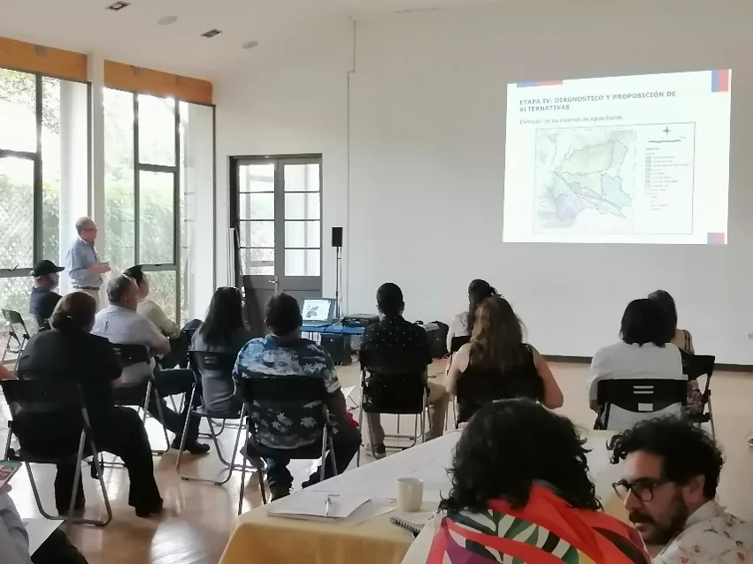
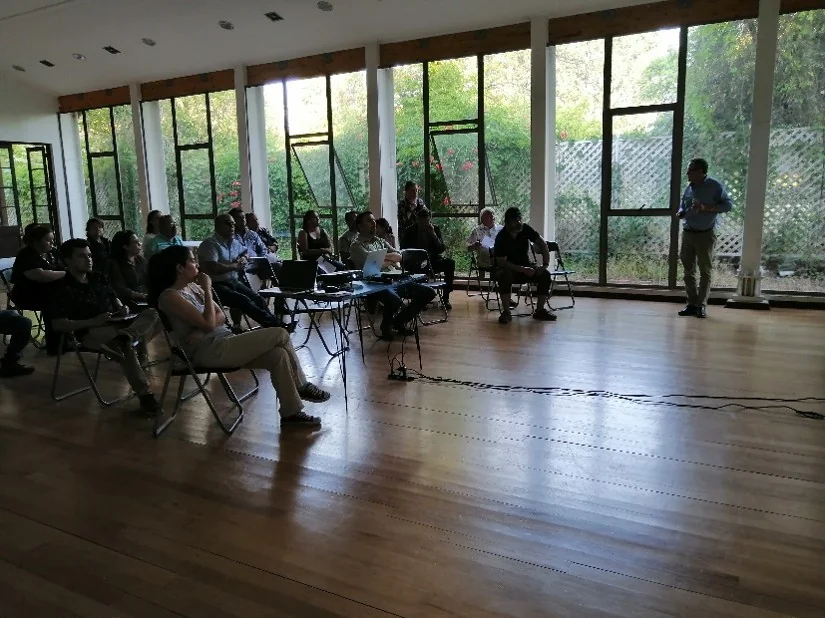
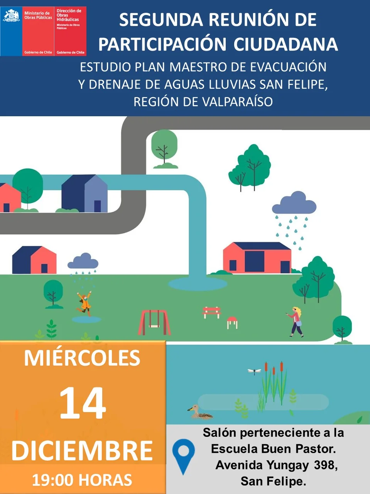
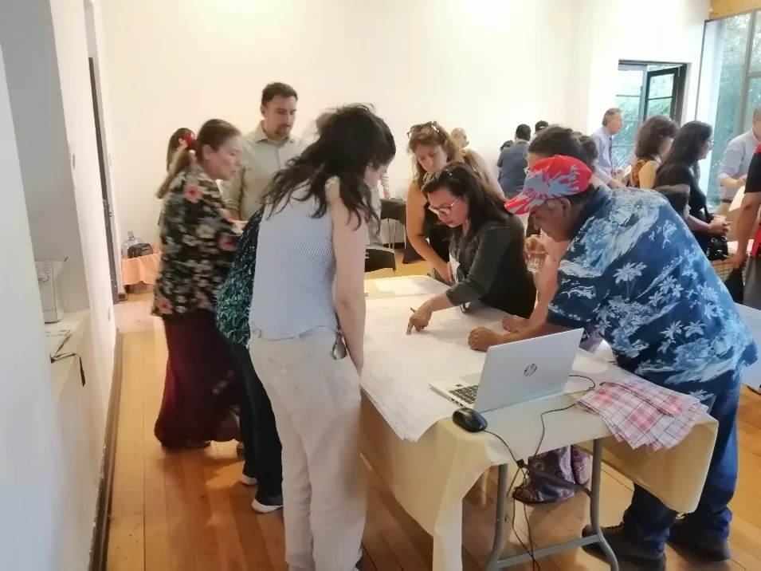

Plan Maestro de Evacuación y Drenaje de Aguas Lluvias de San Felipe
Participación Ciudadana · Análisis socio-territorial · Pertinencia indígena
Mi primera experiencia profesional con GSI Ingeniería marcó también mi incorporación a estudios de infraestructura hidráulica. Me incorporé como profesional de apoyo en Participación Ciudadana. Durante el desarrollo del estudio participé en investigación documental e histórica, entrevistas, análisis de actores y reconocimiento territorial, y fui responsable del Diagnóstico Sociocultural y de Pertinencia Indígena.

El proyecto y mi participación
El Plan Maestro de Evacuación y Drenaje de Aguas Lluvias de San Felipe fue desarrollado por GSI Ingeniería para la Dirección de Obras Hidráulicas del Ministerio de Obras Públicas. Su propósito fue estudiar integralmente el sistema de drenaje de la ciudad y formular alternativas para enfrentar los problemas de evacuación y acumulación de aguas lluvias en la situación actual y futura.
El estudio combinó antecedentes técnicos —estudios hidrológicos, modelación hidráulica, diagnóstico y evaluación de alternativas— con información territorial aportada por actores comunitarios e institucionales. La Participación Ciudadana acompañó distintas etapas mediante entrevistas, encuestas, reuniones y actividades territoriales orientadas a identificar problemas y recoger antecedentes locales.
Mi participación comenzó en labores de apoyo al componente de Participación Ciudadana y fue incorporando progresivamente tareas de investigación documental e histórica, entrevistas, análisis de actores, reconocimiento territorial, vinculación comunitaria e institucional y sistematización de información. Fui responsable del Diagnóstico Sociocultural y de Pertinencia Indígena.
Ver referencia institucional del proyecto en GSI IngenieríaUn proceso participativo desarrollado en varios momentos Entrevistas · encuestas · reuniones · revisión de avances · presentación de resultados
La Participación Ciudadana del Plan Maestro no consistió en una única actividad. El proceso incluyó distintos tipos de instancias desarrolladas a lo largo de varios años, con participantes comunitarios e institucionales en distintos momentos del proceso.
- – Reunión inicial
- – 13 entrevistas
- – Prensa histórica
- – Diagnóstico preliminar
- – 26 entrevistas
- – 15 encuestas
- – Reuniones comunitarias e institucionales
- – 16 participantes institucionales
- – 34 participantes comunitarios
- – 22 encuestas
- – 37 participantes comunitarios
- – 9 participantes institucionales
Las cifras corresponden a distintos momentos del proceso y se presentan según los registros disponibles para cada uno; no deben interpretarse automáticamente como totales acumulativos.


Escuchar y comprender el territorio
El proceso de Participación Ciudadana se desarrolló en distintas etapas mediante entrevistas, encuestas, reuniones con actores comunitarios e institucionales y canales de comunicación mantenidos durante el estudio. Para la selección de participantes se consideraron criterios de representatividad tipológica y localización geográfica, buscando incorporar diferentes organizaciones, instituciones y sectores del territorio.
Entre las principales inquietudes aparecieron la recurrencia de inundaciones y anegamientos y sus efectos sobre actividades cotidianas, especialmente el tránsito y el comercio, además de situaciones de mayor exposición para niños y personas mayores.
Los actores también plantearon necesidades de coordinación y seguimiento institucional vinculadas, entre otras materias, con la limpieza de colectores y la relación entre obras de pavimentación, infraestructura existente y futuras intervenciones.
Del actor a la evidencia Organización · argumentos · influencia · relaciones
El análisis no se limitó a identificar organizaciones. Las matrices registraron la posición frente al estudio, argumentos explícitos e implícitos, grado de influencia y relaciones con otros actores. Esta estructura permitió ordenar información sobre vínculos institucionales y comunitarios, capacidades de articulación, expectativas y posibles ámbitos de coordinación o conflicto.
Quién
Organización, institución y función territorial.
Qué plantea
Argumentos explícitos y elementos interpretativos.
Qué capacidad tiene
Influencia respecto del estudio y del territorio.
Con quién se relaciona
Vínculos, coordinación, alianzas y controversias.

Cómo el estudio integró antecedentes territoriales al contraste técnico
Los antecedentes territoriales recogidos durante el estudio no quedaron aislados dentro del componente de Participación Ciudadana. Visitas realizadas en días de lluvia, entrevistas, actividades participativas y noticias recopiladas fueron consideradas por el estudio dentro de una comparación principalmente cualitativa utilizada para contrastar los problemas representados técnicamente.
El contraste y la calibración del modelo numérico correspondieron al trabajo técnico del estudio. El aporte del componente territorial consistió en proporcionar antecedentes observados y reportados que podían ser comparados con los resultados de la modelación y posteriormente revisados mediante inspección visual.
Visitas en días de lluvia · Entrevistas
Actividades de Participación Ciudadana · Noticias recopiladas
COMPARACIÓN PRINCIPALMENTE CUALITATIVA
CONTRASTE CON EL MODELO NUMÉRICO DEL ESTUDIO
INSPECCIÓN VISUAL DE LOS PROBLEMAS IDENTIFICADOS
La modelación y calibración numérica correspondieron a las especialidades técnicas del estudio; los antecedentes territoriales fueron una de las fuentes utilizadas para su contraste.
Memoria territorial de un problema recurrente Prensa histórica · lugares · instituciones · episodios documentados
La investigación documental e histórica permitió relacionar eventos de lluvia con lugares, instituciones y experiencias comunitarias antes de iniciar el análisis de alternativas. Los antecedentes fueron reunidos desde prensa y otras fuentes documentales.
Hospital San Camilo · Anegamiento
Temporales · Daños en viviendas y agricultura
Lluvias, desbordes y períodos de déficit hídrico
Anegamientos y problemas urbanos
Eventos registrados en distintos sectores residenciales
Inicio del Plan Maestro
Los hitos corresponden a antecedentes documentales recopilados durante el estudio y no constituyen una serie estadística exhaustiva de eventos meteorológicos.
Diagnóstico Sociocultural y de Pertinencia Indígena
Distinguir antes de concluir
El análisis de pertinencia indígena requirió distinguir entre autoidentificación indígena, existencia de organizaciones, prácticas culturales, antecedentes históricos y posibles relaciones territoriales relevantes para el proyecto.
El diagnóstico incorporó preguntas específicas dentro de entrevistas a actores comunitarios e institucionales, revisión de prensa y antecedentes históricos. Esta diferenciación permitió evitar la equivalencia automática entre presencia demográfica indígena, existencia de organizaciones y existencia de prácticas o lugares culturalmente relevantes dentro del área estudiada.
Participación Ciudadana y análisis socio-territorial · 2021–2024
Me incorporé inicialmente como profesional de apoyo al componente de Participación Ciudadana y posteriormente desarrollé tareas de investigación documental e histórica, entrevistas, análisis de actores, reconocimiento territorial, vinculación comunitaria e institucional y sistematización de información. Fui responsable del Diagnóstico Sociocultural y de Pertinencia Indígena.
Capacidades y productos desarrollados
Responsabilidades y entregables en el marco del estudio
Capacidades desarrolladas:
Producto bajo responsabilidad profesional:
Una experiencia que abrió una línea de trabajo
San Felipe fue el punto de entrada profesional a proyectos de infraestructura hidráulica. La experiencia permitió vincular herramientas propias de la investigación social —entrevistas, fuentes documentales, análisis de actores y lectura territorial— con los requerimientos de un estudio de ingeniería desarrollado durante varias etapas.
En proyectos posteriores, esta línea de trabajo se ha profundizado mediante triangulación de fuentes, análisis cualitativo más sistemático y mecanismos de trazabilidad de evidencia. La pregunta de fondo, sin embargo, permanece: cómo representar de manera rigurosa el conocimiento de las personas y los territorios para que pueda incorporarse de forma útil a las decisiones de proyectos complejos.
¿Trabajas en un proyecto con una dimensión territorial compleja?